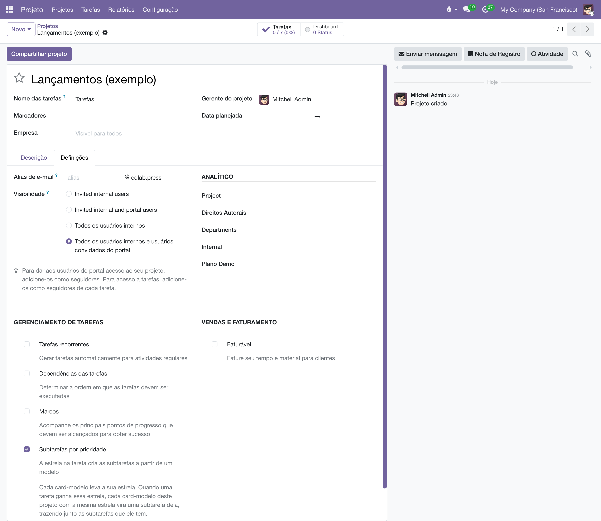
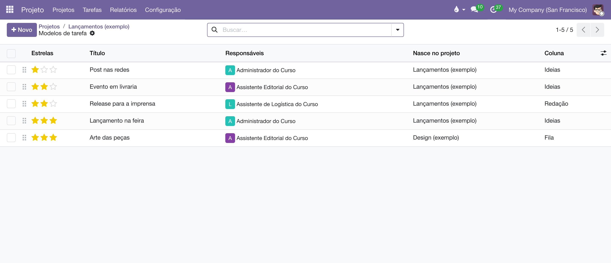
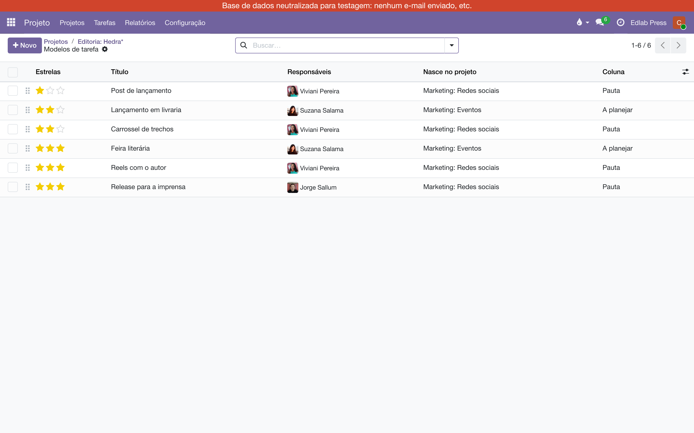
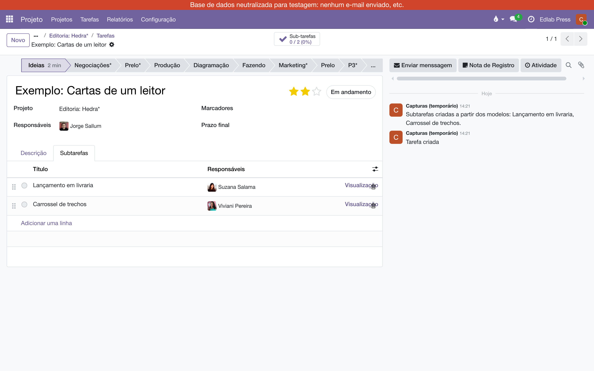

Um módulo para as operações de marketing. A estrela que o editor dá ao card é a expectativa sobre o lançamento, e ela monta a pauta de divulgação: cada card-modelo do projeto com a mesma estrela vira uma subtarefa, já com responsável e coluna. Trocar a estrela troca a pauta, sem apagar o trabalho feito.
A estrela de um card é a aposta da editoria naquele título: quanto maior a expectativa, mais ações de marketing o lançamento pede. Um lançamento pequeno pede um post nas redes; um médio pede evento em livraria e release para a imprensa; um grande pede tudo isso e a feira. Em vez de lembrar a lista toda vez, o projeto guarda os cards-modelo, cada um marcado com a estrela da campanha a que pertence. O editor marca a estrela no card do livro, e o plano de divulgação aparece embaixo, pronto para o marketing distribuir. A estrela que se dá ao card é o tamanho da campanha:
Cada modelo vira uma subtarefa, com o nome, os responsáveis, a coluna, os marcadores e a descrição que ele tem. Se o modelo tiver subtarefas dentro, elas vêm junto, como subtarefas da subtarefa: o que o modelo mostra é o que o card recebe.
É uma opção de cada projeto, como as Tarefas recorrentes. Em , marque Subtarefas por prioridade. Aparece o link Modelos de tarefa.

O link abre a lista dos modelos deste projeto — cada projeto tem os seus, e um não vê os do outro. Em Novo, crie o card como qualquer tarefa: título, responsáveis, a coluna em que a subtarefa deve nascer, e a estrela da campanha. Coloque quantos modelos quiser; dois modelos com ★★ dão duas subtarefas, na ordem da lista (arraste pela alça para reordenar).
O campo Projeto do card-modelo diz onde a subtarefa nasce, e a coluna é a desse projeto. Para a arte nascer no quadro do Design, abra o modelo e troque o Projeto para o Design, escolhendo a coluna de lá. O modelo continua na lista da Editoria — é a estrela da Editoria que o dispara; o formulário dele mostra isso em Estrela no projeto. Na lista, a coluna Nasce no projeto mostra o destino de cada um.

Um card comum também vira modelo pelo menu de ações, em Converter em modelo. Se ele já tinha estrela, as subtarefas que a estrela lhe deu e que ninguém mexeu saem na conversão: o modelo leva só o que é dele.
O jeito mais claro de montar a pauta é separar o onde se decide do onde se trabalha. A estrela se dá no card do livro, no board da Editoria; o trabalho de divulgação acontece em boards do marketing, um por tipo de coisa. Dois bastam para começar:
Crie os dois boards vazios, em , só com as colunas. Depois, na Editoria, ligue Subtarefas por prioridade e monte a lista de Modelos de tarefa assim — cada linha com a estrela da campanha, o responsável do marketing e o Nasce no projeto apontando para o board certo:
| Estrela | Card-modelo | Nasce no projeto | Coluna |
|---|---|---|---|
| ★ | Post de lançamento | Marketing: Redes sociais | Pauta |
| ★★ | Lançamento em livraria | Marketing: Eventos | A planejar |
| ★★ | Carrossel de trechos | Marketing: Redes sociais | Pauta |
| ★★★ | Feira literária | Marketing: Eventos | A planejar |
| ★★★ | Reels com o autor | Marketing: Redes sociais | Pauta |
| ★★★ | Release para a imprensa | Marketing: Redes sociais | Pauta |

Repare que a estrela maior não herda os modelos da menor: um livro ★★★ recebe só os três modelos ★★★. Se a feira também deve ter o post de lançamento, ponha um modelo de post em cada estrela — é o que a lista diz que é o que o card recebe. A descrição de cada modelo é o briefing: o que a peça precisa ter, o que o evento precisa fechar.
Daí em diante o editor só dá a estrela. Um livro com ★★ aparece em A planejar do board de Eventos como Lançamento em livraria, e em Pauta do board de Redes como Carrossel de trechos — cada card com o nome do livro logo abaixo do título, e já com o responsável do marketing.

Os boards de marketing podem ter os seus próprios jobs por coluna: a coluna Confirmado do board de Eventos pode agendar, por exemplo, a atividade "Pedir estoque à loja" para quem move o card.
Marque a estrela no card, no quadro ou no formulário. As subtarefas aparecem na aba Subtarefas, e o chatter registra numa nota o que entrou.

A estrela manda na pauta, com uma regra para proteger o trabalho:
Se a estrela não tiver nenhum modelo no projeto, nada é criado e a nota diz isso — com o caminho para marcar a estrela num card-modelo.
Uma subtarefa pode ser levada a outro board — a arte, para o projeto do Design. Lá, o card dela mostra o nome da tarefa-mãe logo abaixo do título. Para achar todas as que vieram de um mesmo card, a busca das tarefas, em qualquer board, tem Tarefa-mãe:
Vale para qualquer subtarefa, gerada pela estrela ou criada à mão. Por isso não é preciso pôr o nome da mãe no título: ele ficaria velho no dia em que a mãe fosse renomeada.
Manual completo, com busca e as demais páginas: Subtarefas pela estrela.